図解・プレゼン共通アイコン 人・もの・PC・サーバーとAWS / Azure。名称ラベルとともに使用。公式アイコンの原色・形状を保持。
すべて 汎用線画 AWS公式 Azure公式 利用条件と制作手順 · 出典・版・SHA256台帳
人・利用者 generic.user 素材を開く 複数の人・チーム generic.users 素材を開く 連絡先 generic.contact 素材を開く PC・ノートPC generic.laptop 素材を開く ディスプレイ・デスクトップ generic.monitor 素材を開く スマートフォン generic.smartphone 素材を開く タブレット generic.tablet 素材を開く サーバー generic.server 素材を開く データベース generic.database 素材を開く ストレージ generic.hard-drive 素材を開く クラウド generic.cloud 素材を開く ネットワーク generic.network 素材を開く ルーター generic.router 素材を開く 無線接続 generic.wifi 素材を開く インターネット generic.globe 素材を開く 会社・建物 generic.building-2 素材を開く 家庭 generic.house 素材を開く 工場 generic.factory 素材を開く CPU・処理装置 generic.cpu 素材を開く 半導体・組込み装置 generic.microchip 素材を開く フォルダ generic.folder 素材を開く 文書 generic.file-text 素材を開く 複数の資料 generic.files 素材を開く 画像 generic.image 素材を開く メール generic.mail 素材を開く 会話・メッセージ generic.message-square 素材を開く 保護・セキュリティ generic.shield-check 素材を開く ロック・権限制御 generic.lock-keyhole 素材を開く 鍵・認証 generic.key-round 素材を開く 設定・運用 generic.settings 素材を開く 検索 generic.search 素材を開く 分析・推移 generic.chart-no-axes-combined 素材を開く 処理の流れ generic.workflow 素材を開く もの・パッケージ generic.package 素材を開く 買い物 generic.shopping-cart 素材を開く 配送 generic.truck 素材を開く 学習・本 generic.book-open 素材を開く 教育 generic.graduation-cap 素材を開く アイデア generic.lightbulb 素材を開く 連携・合意 generic.handshake 素材を開く ボット・AI generic.bot 素材を開く カメラ generic.camera 素材を開く プリンター generic.printer 素材を開く 注意 generic.circle-alert 素材を開く 完了 generic.circle-check 素材を開く 時間 generic.clock 素材を開く 予定 generic.calendar 素材を開く 場所 generic.map-pin 素材を開く Amazon Simple Storage Service aws.Amazon-Simple-Storage-Service 素材を開く 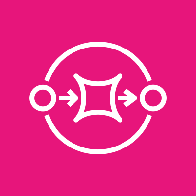
Amazon Simple Queue Service aws.Amazon-Simple-Queue-Service 素材を開く Amazon EC2 aws.Amazon-EC2 素材を開く 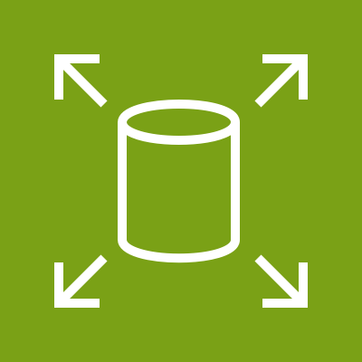
Amazon Elastic Block Store aws.Amazon-Elastic-Block-Store 素材を開く Amazon CloudFront aws.Amazon-CloudFront 素材を開く Amazon Virtual Private Cloud aws.Amazon-Virtual-Private-Cloud 素材を開く 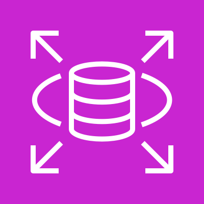
Amazon RDS aws.Amazon-RDS 素材を開く 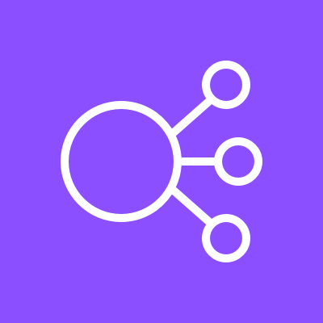
Elastic Load Balancing aws.Elastic-Load-Balancing 素材を開く 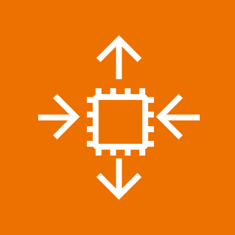
Amazon EC2 Auto Scaling aws.Amazon-EC2-Auto-Scaling 素材を開く Amazon CloudWatch aws.Amazon-CloudWatch 素材を開く 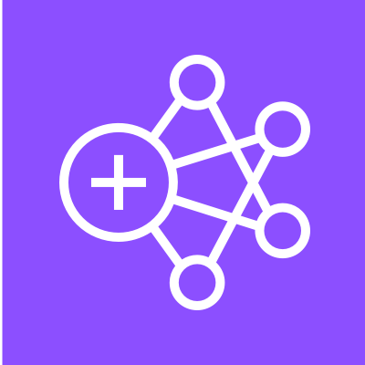
Amazon EMR aws.Amazon-EMR 素材を開く AWS Identity and Access Management aws.AWS-Identity-and-Access-Management 素材を開く Amazon Route 53 aws.Amazon-Route-53 素材を開く Amazon Simple Notification Service aws.Amazon-Simple-Notification-Service 素材を開く AWS CloudFormation aws.AWS-CloudFormation 素材を開く AWS Elastic Beanstalk aws.AWS-Elastic-Beanstalk 素材を開く AWS Direct Connect aws.AWS-Direct-Connect 素材を開く Amazon DynamoDB aws.Amazon-DynamoDB 素材を開く Amazon Simple Storage Service Glacier aws.Amazon-Simple-Storage-Service-Glacier 素材を開く Amazon Redshift aws.Amazon-Redshift 素材を開く Amazon Kinesis aws.Amazon-Kinesis 素材を開く AWS CloudTrail aws.AWS-CloudTrail 素材を開く 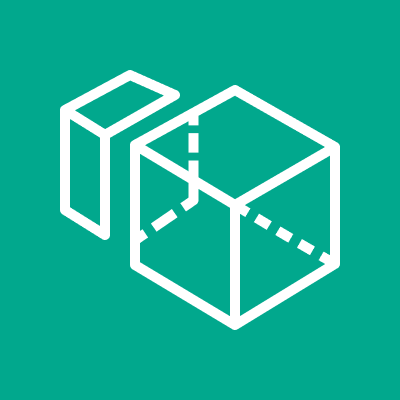
Amazon WorkSpaces aws.Amazon-WorkSpaces 素材を開く AWS Lambda aws.AWS-Lambda 素材を開く Amazon Elastic Container Service aws.Amazon-Elastic-Container-Service 素材を開く 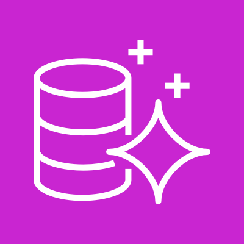
Amazon Aurora aws.Amazon-Aurora 素材を開く AWS Key Management Service aws.AWS-Key-Management-Service 素材を開く Amazon API Gateway aws.Amazon-API-Gateway 素材を開く AWS IoT Core aws.AWS-IoT-Core 素材を開く Amazon Athena aws.Amazon-Athena 素材を開く AWS Step Functions aws.AWS-Step-Functions 素材を開く Amazon Rekognition aws.Amazon-Rekognition 素材を開く Amazon Polly aws.Amazon-Polly 素材を開く 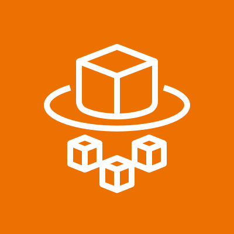
AWS Fargate aws.AWS-Fargate 素材を開く 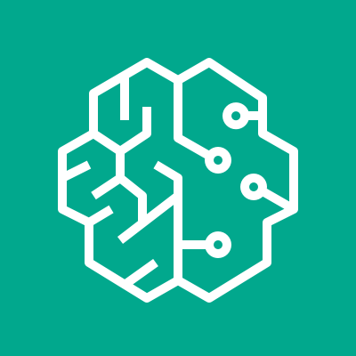
Amazon SageMaker AI aws.Amazon-SageMaker-AI 素材を開く Amazon Elastic Kubernetes Service aws.Amazon-Elastic-Kubernetes-Service 素材を開く Amazon Connect aws.Amazon-Connect 素材を開く AWS Secrets Manager aws.AWS-Secrets-Manager 素材を開く Amazon EventBridge aws.Amazon-EventBridge 素材を開く AWS Control Tower aws.AWS-Control-Tower 素材を開く 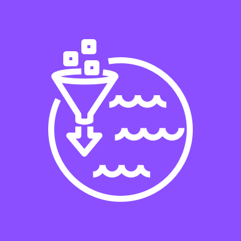
AWS Lake Formation aws.AWS-Lake-Formation 素材を開く 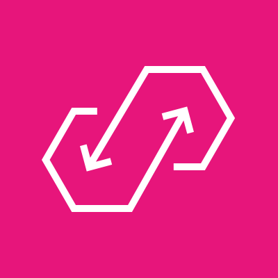
Amazon AppFlow aws.Amazon-AppFlow 素材を開く AWS App Runner aws.AWS-App-Runner 素材を開く 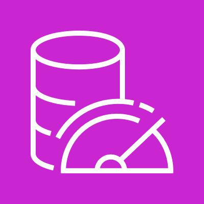
Amazon MemoryDB aws.Amazon-MemoryDB 素材を開く Amazon Managed Grafana aws.Amazon-Managed-Grafana 素材を開く Amazon Managed Service for Prometheus aws.Amazon-Managed-Service-for-Prometheus 素材を開く 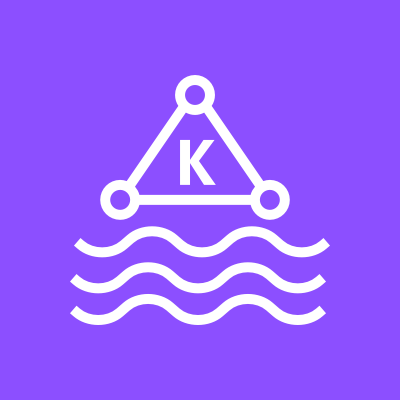
Amazon Managed Streaming for Apache Kafka aws.Amazon-Managed-Streaming-for-Apache-Kafka 素材を開く Amazon Bedrock aws.Amazon-Bedrock 素材を開く 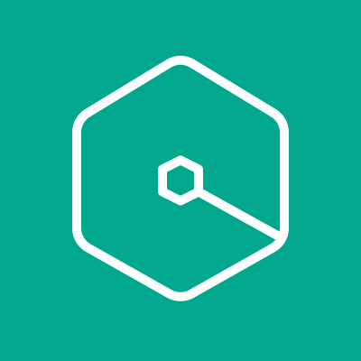
Amazon Q aws.Amazon-Q 素材を開く Amazon Nova aws.Amazon-Nova 素材を開く 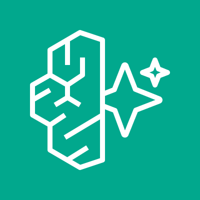
Amazon Bedrock AgentCore aws.Amazon-Bedrock-AgentCore 素材を開く Resource User aws.Resource-User 素材を開く Resource Users aws.Resource-Users 素材を開く Resource Server aws.Resource-Server 素材を開く Resource Servers aws.Resource-Servers 素材を開く Resource Document aws.Resource-Document 素材を開く Resource Documents aws.Resource-Documents 素材を開く Resource Database aws.Resource-Database 素材を開く Resource Generic Application aws.Resource-Generic-Application 素材を開く Resource Mobile client aws.Resource-Mobile-client 素材を開く Resource SDK aws.Resource-SDK 素材を開く Resource Source Code aws.Resource-Source-Code 素材を開く Resource Data Table aws.Resource-Data-Table 素材を開く Resource Metrics aws.Resource-Metrics 素材を開く Resource Magnifying Glass aws.Resource-Magnifying-Glass 素材を開く Resource Toolkit aws.Resource-Toolkit 素材を開く Resource Shield aws.Resource-Shield 素材を開く Resource Folder aws.Resource-Folder 素材を開く Resource Globe aws.Resource-Globe 素材を開く Resource Gear aws.Resource-Gear 素材を開く Resource Credentials aws.Resource-Credentials 素材を開く Resource Question aws.Resource-Question 素材を開く Resource Camera aws.Resource-Camera 素材を開く S3 Tables aws.S3-Tables 素材を開く S3 Vectors aws.S3-Vectors 素材を開く Azure Virtual Machines azure.Virtual-Machine 素材を開く Azure Kubernetes Service (AKS) azure.Kubernetes-Services 素材を開く Azure Functions azure.Function-Apps 素材を開く Azure App Service azure.App-Services 素材を開く Azure Container Registry azure.Container-Registries 素材を開く Azure Cosmos DB azure.Azure-Cosmos-DB 素材を開く Azure SQL Database azure.SQL-Database 素材を開く Azure API Management azure.API-Management-Services 素材を開く Azure Service Bus azure.Azure-Service-Bus 素材を開く Azure Monitor azure.Monitor 素材を開く Azure Virtual Network azure.Virtual-Networks 素材を開く Azure Load Balancer azure.Load-Balancers 素材を開く Azure Key Vault azure.Key-Vaults 素材を開く Azure Storage accounts azure.Storage-Accounts 素材を開く Azure Application Gateway azure.Application-Gateways 素材を開く Azure Firewall azure.Firewalls 素材を開く Azure DNS azure.DNS-Zones 素材を開く Azure Front Door and CDN profiles azure.Front-Door-and-CDN-Profiles 素材を開く Log Analytics workspaces azure.Log-Analytics-Workspaces 素材を開く 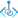
Azure Private Link azure.Private-Link 素材を開く  ディスプレイ・デスクトップgeneric.monitor素材を開く
ディスプレイ・デスクトップgeneric.monitor素材を開く スマートフォンgeneric.smartphone素材を開く
スマートフォンgeneric.smartphone素材を開く サーバーgeneric.server素材を開く
サーバーgeneric.server素材を開く データベースgeneric.database素材を開く
データベースgeneric.database素材を開く クラウドgeneric.cloud素材を開く
クラウドgeneric.cloud素材を開く インターネットgeneric.globe素材を開く
インターネットgeneric.globe素材を開く 家庭generic.house素材を開く
家庭generic.house素材を開く フォルダgeneric.folder素材を開く
フォルダgeneric.folder素材を開く 保護・セキュリティgeneric.shield-check素材を開く
保護・セキュリティgeneric.shield-check素材を開く ロック・権限制御generic.lock-keyhole素材を開く
ロック・権限制御generic.lock-keyhole素材を開く 鍵・認証generic.key-round素材を開く
鍵・認証generic.key-round素材を開く 設定・運用generic.settings素材を開く
設定・運用generic.settings素材を開く 検索generic.search素材を開く
検索generic.search素材を開く 処理の流れgeneric.workflow素材を開く
処理の流れgeneric.workflow素材を開く 教育generic.graduation-cap素材を開く
教育generic.graduation-cap素材を開く 連携・合意generic.handshake素材を開く
連携・合意generic.handshake素材を開く 注意generic.circle-alert素材を開く
注意generic.circle-alert素材を開く 時間generic.clock素材を開く
時間generic.clock素材を開く 場所generic.map-pin素材を開く
場所generic.map-pin素材を開く Amazon DynamoDBaws.Amazon-DynamoDB素材を開く
Amazon DynamoDBaws.Amazon-DynamoDB素材を開く Amazon API Gatewayaws.Amazon-API-Gateway素材を開く
Amazon API Gatewayaws.Amazon-API-Gateway素材を開く AWS Step Functionsaws.AWS-Step-Functions素材を開く
AWS Step Functionsaws.AWS-Step-Functions素材を開く Amazon Bedrockaws.Amazon-Bedrock素材を開く
Amazon Bedrockaws.Amazon-Bedrock素材を開く Resource Useraws.Resource-User素材を開く
Resource Useraws.Resource-User素材を開く Resource Magnifying Glassaws.Resource-Magnifying-Glass素材を開く
Resource Magnifying Glassaws.Resource-Magnifying-Glass素材を開く Resource Shieldaws.Resource-Shield素材を開く
Resource Shieldaws.Resource-Shield素材を開く Resource Gearaws.Resource-Gear素材を開く
Resource Gearaws.Resource-Gear素材を開く Azure Kubernetes Service (AKS)azure.Kubernetes-Services素材を開く
Azure Kubernetes Service (AKS)azure.Kubernetes-Services素材を開く Azure Functionsazure.Function-Apps素材を開く
Azure Functionsazure.Function-Apps素材を開く Azure App Serviceazure.App-Services素材を開く
Azure App Serviceazure.App-Services素材を開く Azure Cosmos DBazure.Azure-Cosmos-DB素材を開く
Azure Cosmos DBazure.Azure-Cosmos-DB素材を開く Azure SQL Databaseazure.SQL-Database素材を開く
Azure SQL Databaseazure.SQL-Database素材を開く Azure Monitorazure.Monitor素材を開く
Azure Monitorazure.Monitor素材を開く Azure Key Vaultazure.Key-Vaults素材を開く
Azure Key Vaultazure.Key-Vaults素材を開く Azure Storage accountsazure.Storage-Accounts素材を開く
Azure Storage accountsazure.Storage-Accounts素材を開く Azure Front Door and CDN profilesazure.Front-Door-and-CDN-Profiles素材を開く
Azure Front Door and CDN profilesazure.Front-Door-and-CDN-Profiles素材を開く Log Analytics workspacesazure.Log-Analytics-Workspaces素材を開く
Log Analytics workspacesazure.Log-Analytics-Workspaces素材を開く